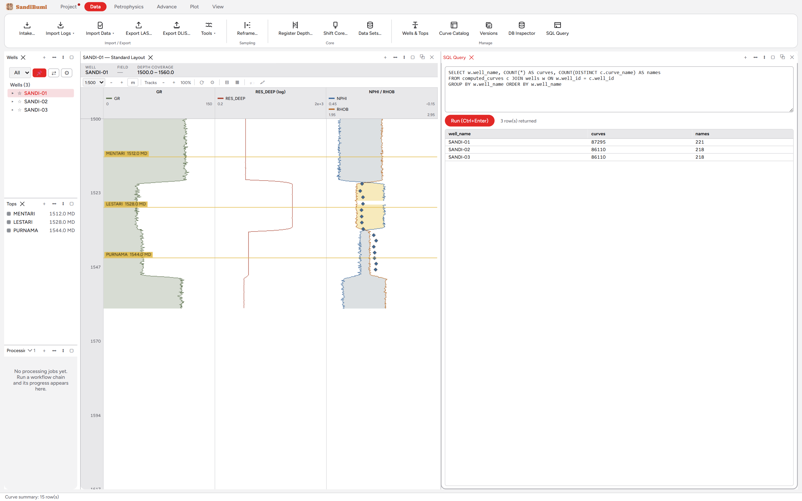
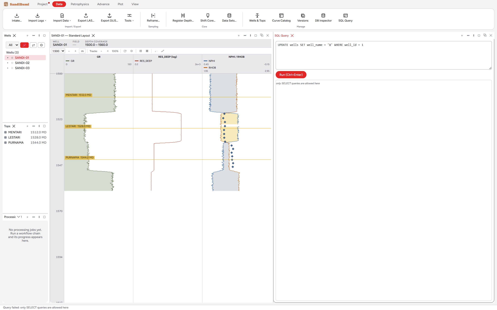

The SQL Query panel is direct, read-only access to the project database:
type a SELECT, press Run, read the table. Reach for it when a question is
about the data as stored rather than as displayed, "how many rows does each
well carry", "which depths appear twice", "what distinct units does this
mnemonic arrive in", and no panel happens to ask it for you.
The pane

A join over computed curves and wells: SANDI-01 carries
87,295 rows across 221 distinct curve names, its neighbours 86,110
across 218, counted by the query itself.
Queries are ordinary SQL (DuckDB dialect): joins, GROUP BY, CTEs. The
example that produced the figure:
SELECT w.well_name, COUNT(*) AS curves, COUNT(DISTINCT c.curve_name) AS names
FROM computed_curves c JOIN wells w ON w.well_id = c.well_id
GROUP BY w.well_name ORDER BY w.well_name
Step by step
Open Data ▸ SQL Query, type the SELECT, press Run (or
Ctrl+Enter), and read the row count and table.
Use the Database Inspector's table list as the schema map; the tables
it browses are the tables you query.
Reading the result
The panel is a window, never a pen. Writes do not go through here at
all: the frontend has no free-form write path, every write in the
application is an explicit named command, and this panel enforces its half
of that contract by refusing anything but a query.

An UPDATE is refused: "only SELECT queries are allowed here",
in the results area and the status line both.
QC and pitfalls
The panel reads stored rows, not resolution rules. A query over
computed curves sees every set and version's surviving rows as data; it
does not apply the RAW-priority resolution or the active-set filters
the application's own readers use. For "what would a module see", ask
the Curve Catalog; for "what is physically stored", ask here.
Counted claims beat browsed ones. "SANDI-01 has 87,295
computed rows" is worth stating because a query counted it; the same
claim from scrolling a grid is a guess.
Aggregates over versioned tables need care. Averaging a curve
across every stored version double-counts history; filter to the set
and version you mean.